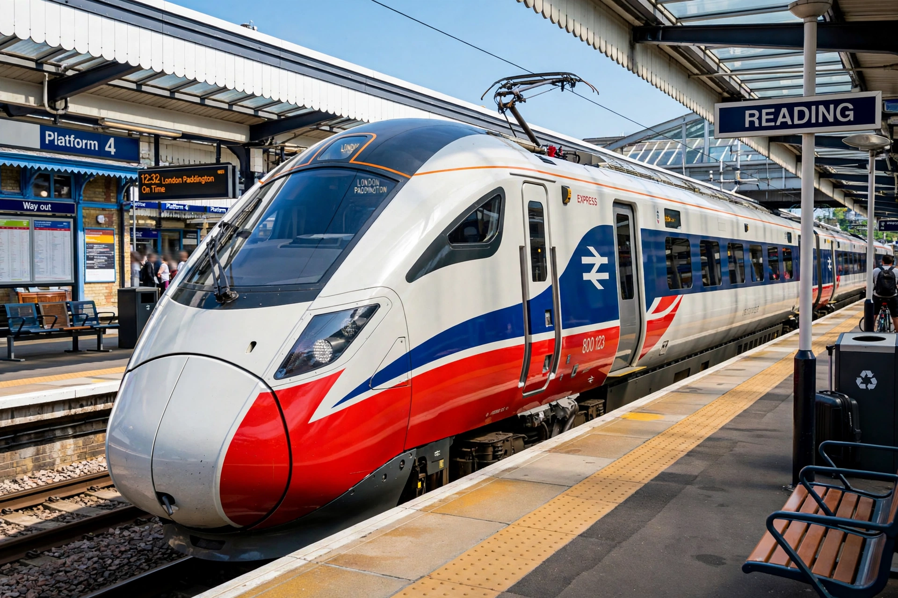

| Proposed | May 2021 (Williams–Shapps Plan for Rail) |
|---|---|
| Type | Public body (planned) |
| Headquarters | Derby, England (announced 2023) |
| Predecessors | Network Rail; franchising functions of the Department for Transport |
| Status | Being legislated for / established in transition form |
Great British Railways (GBR) is a planned state-owned public body intended to oversee rail transport in Great Britain. Announced in May 2021 as the centrepiece of the Williams–Shapps Plan for Rail, it is designed to act as a single "guiding mind" for the network, integrating the management of infrastructure — currently run by Network Rail — with the specification and contracting of passenger services, replacing the franchising system that followed privatisation.
The fragmented structure created in the 1990s — infrastructure separated from operations, with the failure of Railtrack in 2001 a defining episode — was reviewed by Keith Williams after the May 2018 timetable crisis. The pandemic then collapsed the franchise model, with operators moved onto emergency contracts. The Williams–Shapps white paper proposed GBR as the remedy: it would own the infrastructure, set most fares, plan the timetable, and let "Passenger Service Contracts" to private operators.
A transition team based in Derby — chosen in 2023 after a public competition among candidate cities — began preparatory work, and Network Rail's functions began to be aligned with the future body. Legislation was delayed under successive governments. The Labour government elected in 2024 pursued its own programme: the Passenger Railway Services (Public Ownership) Act 2024 allows franchises to be taken into public ownership as contracts expire, and a Railways Bill to formally establish Great British Railways as the integrated operator of both track and train followed.
GBR is expected to use a unified national brand with a refreshed version of the classic British Rail "double arrow" symbol, ending the patchwork of operator liveries on contracted services.
The plan has been broadly welcomed for reintegrating track and train, though critics have questioned the degree of political control over fares and timetables, and the treatment of freight and open-access operators, which are to remain outside GBR's contracts.
See also: Railtrack · British Rail · Network Rail